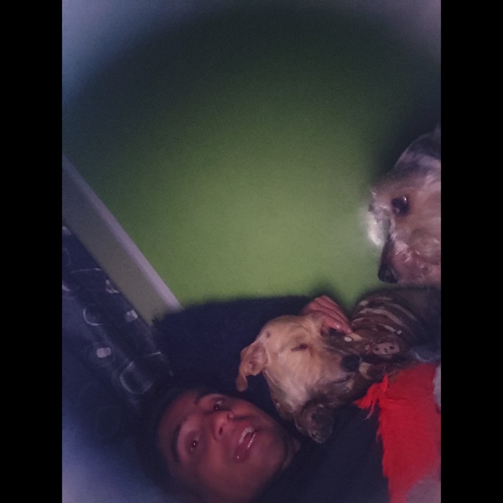

acerca de mi
Bienvenidos a mi web
Pienso en ti todos los días, mi mejor amigo peludo. No puedo imaginar la vida sin ti, siempre estás ahí para mí. Me haces reír cuando me siento mal, y sé que siempre puedo contar contigo. eres mi leal compañero, y te amo mucho.
